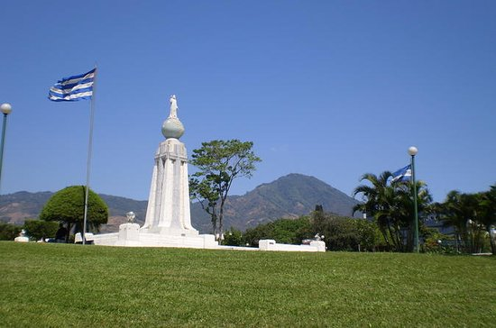
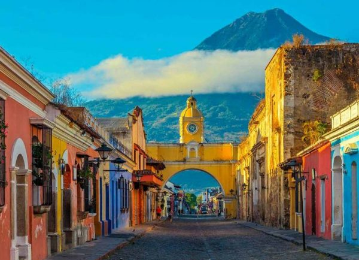
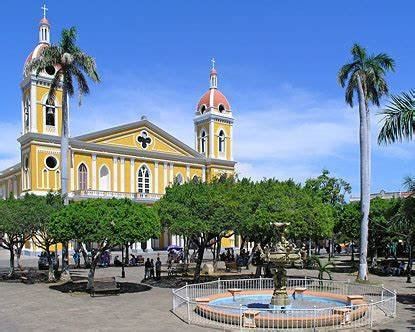
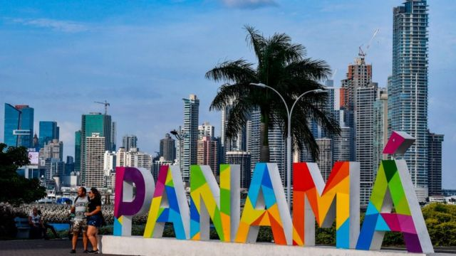

El Salvador

El Salvador, oficialmente República de El Salvador, es un pais soberano de America Central ubicado en el litoral del océano Pacífico
con una extension territorial de 21041 km2. En el año 2015 contaba con una población estimada de 6 377 195 habitantes,
siendo el pais mas densamente poblado del continente americano.
Unos de sus sitios mas reconocidos es el Monumento al Salvador del Mundo/p>
Guatemala

Guatemala -oficialmente República de Guatemala, es un estado soberano situado en America Central, en su extremo noroccidental,
con una amplia cultura autóctona producto de la herencia maya y la influencia castellana durante la epoca colonial.
Unos de sus sitios turisticos mas famosos es Antigua Guatemala/p>
Honduras

Honduras es un pais de America, ubicado en el centro-norte de America Central. Su nombre oficial es Repúblicade Honduras y su capital
es el Distrito Central, formado por las ciudades de Tegucigalpa y Comayaguela.
Unos de sus sitios turisticos mas famosos es Roatán/p>
Nicaragua

Nicaragua es un pais ubicado en el istmo centroamericano que limita con Honduras , al norte y con Costa Rica, al sur.
Posee costas en el océano Pacífico y el mar Caribe, y en cuento a limites maritimos en el oceano Pacifico colinda con El Salvador,
Honduras y Costa Rica; mientras que en el mar Caribe colinda con Honduras y Colombia y Costa Rica.
Unos de sus sitios mas reconocidos es su capital, Managua/p>
Panama

Panamá es un pais ubicado en el extremo sureste de América Central. Su nombre oficial es República de Panamá y su capital es la ciudad de Panamá.
Limita al Norte con el mar Caribe, al Sur con el oceano Pacífico, al Este con Colombia y al Oeste con Costa Rica.
Uno de sus lugares mas visitados es Ciudad de Panamá